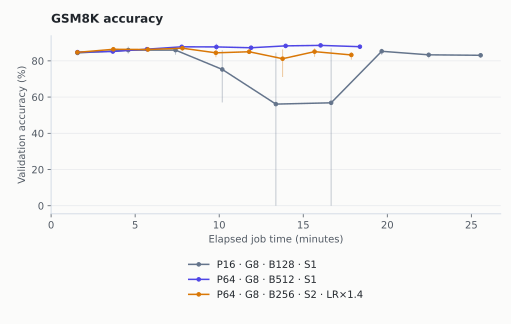
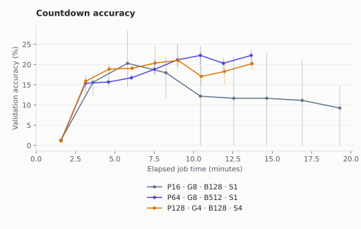
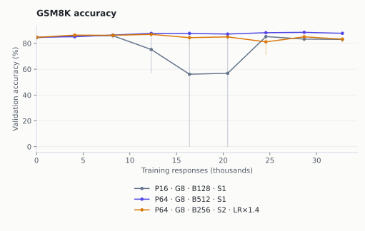
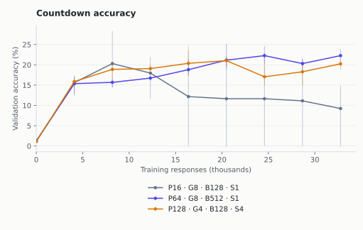
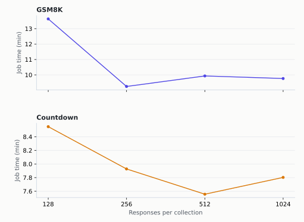

For Qwen2.5-1.5B-Instruct on two B200 GPUs, the strongest shared starting recipe we confirmed was 64 prompts, eight answers each, one model update using all 512 responses. It improved test accuracy and finished sooner than the small-batch baseline in all three seed pairs on both tasks. The gains include changes in training stability and answer length, not just GPU throughput.
Group Relative Policy Optimization (GRPO) learns by comparing rewards among several answers to the same problem. In our synchronous setup, a rollout collects those answers with one version of the model; training then uses them to update its parameters.
Background · Part 2RL Surrogate Losses in 2026 How advantages, probability ratios, and clipping turn rewarded answers into gradients.One collection, four updates
Generate eight answers to each of 64 problems. You now have 512 training responses. This example keeps those responses fixed and asks how to consume them: four updates of 128, or one update of 512.
| Miles setting | Symbol | Unit |
|---|---|---|
--rollout-batch-size | \(P\) | Prompts per collection |
--n-samples-per-prompt | \(G\) | Responses per prompt |
--global-batch-size | \(B\) | Responses per optimizer update |
--num-steps-per-rollout | \(S\) | Updates per collection |
The accounting rule makes every retained response fit into exactly one update:
More inner steps partition the collection; they do not replay it. Each slice produces an accumulated gradient and an Adam optimizer update. The generator receives new weights only after all the slices finish. Later slices therefore train a model that has already moved away from the version that generated them.
Choose three batch settings
The fourth must make every generated response fit into exactly one optimizer update.
Generation uses one weight snapshot. Training publishes new weights after all these updates.
The diagram shows slice sizes. Token balancing can reorder actual responses, and group members need not stay in the same update.
Fixing group size still leaves two independent choices: how many prompts to collect, and how many responses to use per optimizer update. The number of updates follows. If the optimizer batch is fixed too, a larger collection necessarily means more inner updates.
A microbatch is the part processed at once before gradients are accumulated. Tune --micro-batch-size or --max-tokens-per-gpu for GPU memory and throughput. That preserves the intended optimizer batch, apart from numerical effects. Increasing --global-batch-size changes the learning algorithm.
Miles implementation boundaries
In our pinned Miles version, supplying the number of inner steps derives the optimizer batch by integer floor division. This is not a general, exact “set any three” solver. Our launcher validates all four positive integers and rejects any shape where the products differ.
--num-rollout counts outer generate-then-train cycles. --balance-data reorders responses for token load; group members need not occupy the same update because their advantages have already been calculated. Oversampling and dynamic filtering can generate extra groups: the equality describes what survives to training, while timing must count the discarded work too. Our comparison uses no filtering.
With one answer per prompt, Miles disables division by the group standard deviation. Group centering subtracts the average reward; with one answer, it subtracts that answer’s reward from itself, yielding zero policy advantage. A one-answer algorithm needs a different baseline or objective.
The confirmation results
We trained Qwen2.5-1.5B-Instruct on two tasks: GSM8K word problems and Countdown arithmetic expressions that must use every supplied number once. Each run used two NVIDIA B200 GPUs, one for training and one for the SGLang inference engine, updating all model parameters in bfloat16 (BF16) precision.
Twenty-two single-seed runs screened the batch choices. One additional Countdown run checked learning-rate sensitivity. We then froze three recipes per task and trained each with three fresh seeds and 32,768 responses. Validation problems supplied learning curves; separate held-out test problems evaluated the final checkpoints. In the charts and tables, LR means learning rate, the optimizer’s step-size setting. Confirmation used a base rate of 3e-6; the retuned GSM8K recipe multiplies it by √2.
The baseline collects 16 prompts × eight answers and performs one update of 128 responses. Alternatives collect 512 responses and vary how training consumes them. We estimate test uncertainty by resampling the same problems jointly across the three trained models; these intervals do not capture uncertainty over every possible training seed.

- One large update improved accuracy and time. Mean test accuracy rose from 74.88% to 77.94%, while full job time fell from 25.57 to 18.39 minutes, a 28.1% reduction. All three paired seeds improved on both measures.
- The retuned two-update recipe did not hold up. It averaged 73.59% test accuracy; seed 3 ended at 67.93%. Its 17.88-minute mean job saved only about half a minute versus the large one-update recipe.
- Runtime includes stability and length changes. Baseline seed 3 scored zero on two intermediate validation checks before recovering; 24.42% of its training responses hit the length cap. Yet in seed 1, the large batch generated 10.11 million output tokens versus 7.52 million and still finished 22.3% sooner.
| Recipe | Test mean / seed range | Job min |
|---|---|---|
| Small one-update baseline P16 · G8 · B128 · S1; LR 3e-06 | 74.88% 74.00–76.57% | 25.57 |
| Large one-update batch P64 · G8 · B512 · S1; LR 3e-06 | 77.94% 77.33–78.92% | 18.39 |
| Two updates, retuned LR P64 · G8 · B256 · S2; LR 4.24e-06 | 73.59% 67.93–77.48% | 17.88 |
1,319 held-out GSM8K test problems; initial model 72.71%. Job time is the mean complete training job, including validation and checkpoint saving. Separate terminal test jobs are excluded.

- The large one-update recipe transferred. Mean test accuracy rose from 9.73% to 21.58%, while full job time fell from 19.31 to 13.68 minutes, a 29.2% reduction. All three paired seeds improved; their time reductions ranged from 9.1% to 48.5%.
- Baseline collapse enlarges the mean gap. Seed 1 reached 28.32% validation accuracy at 8,192 responses, then fell to zero by 16,384 and ended at zero on test. Inspected outputs contained long, incorrect arithmetic and altered operands; the saved-output audit documents the checks. The other baseline test scores were 11.91% and 17.29%.
- Four answers per prompt remained competitive. That recipe averaged 20.25% on test in 13.73 minutes. The large one-update recipe was 1.33 percentage points higher on average, but their ranking reversed in one of three seed pairs; the paired uncertainty interval includes zero.
| Recipe | Test mean / seed range | Job min |
|---|---|---|
| Small one-update baseline P16 · G8 · B128 · S1; LR 3e-06 | 9.73% 0.00–17.29% | 19.31 |
| Large one-update batch P64 · G8 · B512 · S1; LR 3e-06 | 21.58% 18.36–24.61% | 13.68 |
| Four answers, four updates P128 · G4 · B128 · S4; LR 3e-06 | 20.25% 19.63–20.80% | 13.73 |
1,024 held-out Countdown test problems; initial model 1.27%. Job time is the mean complete training job, including validation and checkpoint saving. Separate terminal test jobs are excluded.
These are comparisons against a specified learning rate, not against an independently optimized baseline. A one-seed control with a lower learning rate improved Countdown’s small-batch screening result; it was not confirmed across fresh seeds. The time gains also include changes in response length and training stability.
Accuracy versus responses, active phase time, and seed uncertainty

- Large one-update batch had the highest mean validation endpoint. At 32,768 responses it reached 87.83%. Seed ranges and held-out test results qualify that point estimate.
GSM8K curves by active phase time, generated output tokens, and optimizer updates. Equal update counts use different amounts of data when optimizer batches differ.
{kind=link}
{kind=link}
{kind=link}

- Large one-update batch had the highest mean validation endpoint. At 32,768 responses it reached 22.27%. Seed ranges and held-out test results qualify that point estimate.
Countdown curves by active phase time, generated output tokens, and optimizer updates. Equal update counts use different amounts of data when optimizer batches differ.
{kind=link}
{kind=link}
{kind=link}
“Active phase time” adds measured generation, trainer work including old-policy scoring, and recorded weight synchronization. It excludes initialization, evaluation, and uninstrumented orchestration. Complete job time includes those costs and the final checkpoint save; terminal test evaluation is a separate job.
Chart dots average the three trained seeds; vertical lines show their observed range. The paired test intervals resample problem IDs jointly across seeds. They measure prompt uncertainty conditional on these three trained models, not uncertainty over all possible training runs. Differences in the tables are percentage points (pp).
GSM8K: individual runs
| Recipe | Seed | Val | Test | Phase min | Job min |
|---|---|---|---|---|---|
| Small one-update baseline | 1 | 81.64% | 74.00% | 18.17 | 23.77 |
| Small one-update baseline | 2 | 83.98% | 74.07% | 19.08 | 24.22 |
| Small one-update baseline | 3 | 83.59% | 76.57% | 22.94 | 28.72 |
| Large one-update batch | 1 | 88.28% | 77.56% | 14.95 | 18.47 |
| Large one-update batch | 2 | 86.52% | 77.33% | 14.85 | 18.32 |
| Large one-update batch | 3 | 88.67% | 78.92% | 14.88 | 18.38 |
| Two updates, retuned LR | 1 | 84.38% | 75.36% | 14.47 | 17.88 |
| Two updates, retuned LR | 2 | 84.77% | 77.48% | 14.22 | 17.73 |
| Two updates, retuned LR | 3 | 80.66% | 67.93% | 14.54 | 18.02 |
| Comparison | Mean pp | Conditional 95% interval | Seed differences pp |
|---|---|---|---|
| Large one-update batch versus baseline | +3.06 | [+1.69, +4.47] | +3.56, +3.26, +2.35 |
| Two updates, retuned LR versus baseline | -1.29 | [-2.60, +0.00] | +1.36, +3.41, -8.64 |
| Two updates, retuned LR versus Large one-update batch | -4.35 | [-5.64, -3.06] | -2.20, +0.15, -10.99 |
| Recipe | Generate min | Trainer min | Sync min | Other min | Output million tokens |
|---|---|---|---|---|---|
| Small one-update baseline | 11.78 | 7.68 | 0.61 | 5.50 | 10.21 |
| Large one-update batch | 7.79 | 6.92 | 0.19 | 3.50 | 9.78 |
| Two updates, retuned LR | 7.60 | 6.62 | 0.19 | 3.47 | 8.67 |
Three-seed means. “Other” is full job time minus the recorded phases: it includes initialization, validation, checkpoint saving, and orchestration. Different learned response lengths change the generated work.
GSM8K terminal-test truncation ranged from 0.00% to 1.14% across the nine runs, under the common 1,024-token cap. Per-run test lengths and truncation are in the summary.
Countdown: individual runs
| Recipe | Seed | Val | Test | Phase min | Job min |
|---|---|---|---|---|---|
| Small one-update baseline | 1 | 0.00% | 0.00% | 21.14 | 26.49 |
| Small one-update baseline | 2 | 12.89% | 11.91% | 11.47 | 16.32 |
| Small one-update baseline | 3 | 14.84% | 17.29% | 10.28 | 15.12 |
| Large one-update batch | 1 | 23.83% | 24.61% | 10.44 | 13.65 |
| Large one-update batch | 2 | 23.44% | 21.78% | 10.40 | 13.64 |
| Large one-update batch | 3 | 19.53% | 18.36% | 10.37 | 13.74 |
| Four answers, four updates | 1 | 18.75% | 20.80% | 10.47 | 13.70 |
| Four answers, four updates | 2 | 21.48% | 20.31% | 10.47 | 13.79 |
| Four answers, four updates | 3 | 20.51% | 19.63% | 10.38 | 13.70 |
| Comparison | Mean pp | Conditional 95% interval | Seed differences pp |
|---|---|---|---|
| Large one-update batch versus baseline | +11.85 | [+10.32, +13.38] | +24.61, +9.86, +1.07 |
| Four answers, four updates versus baseline | +10.51 | [+9.05, +12.04] | +20.80, +8.40, +2.34 |
| Four answers, four updates versus Large one-update batch | -1.33 | [-2.87, +0.20] | -3.81, -1.46, +1.27 |
| Recipe | Generate min | Trainer min | Sync min | Other min | Output million tokens |
|---|---|---|---|---|---|
| Small one-update baseline | 8.38 | 5.31 | 0.61 | 5.01 | 3.87 |
| Large one-update batch | 6.57 | 3.65 | 0.19 | 3.27 | 0.60 |
| Four answers, four updates | 6.56 | 3.69 | 0.19 | 3.29 | 0.61 |
Three-seed means. “Other” is full job time minus the recorded phases: it includes initialization, validation, checkpoint saving, and orchestration. Different learned response lengths change the generated work.
Countdown terminal-test truncation ranged from 0.00% to 0.29% across the nine runs, under the common 1,024-token cap. Per-run test lengths and truncation are in the summary.
Evaluation occurred every 4,096 training responses. Time-to-target is therefore an observation bracket, not an exact crossing time. Targets were fixed before screening: 88.59375% and 93.59375% for GSM8K; 5.78125% and 10.78125% for Countdown. All three large one-update GSM8K runs reached the lower target at a scheduled evaluation; neither other recipe did. No GSM8K confirmation run reached the higher target. Every Countdown confirmation run passed both targets by the first 4,096-response evaluation, so first crossing alone misses the later collapse. Unreached targets remain censored in the full summary.
What the screen separated
Each screening run generated 16,384 responses. The grid separates three questions: collecting more at a fixed optimizer batch, changing the optimizer batch inside a fixed collection, and distributing a fixed response budget over more or fewer prompts.

- The smallest collection paid a time penalty. GSM8K took 13.63 minutes at 128 responses per collection, versus 9.25–9.93 minutes at 256–1,024. Countdown fell from 8.55 minutes to a minimum of 7.56 at 512.
- The fastest point was not always the better learner. GSM8K’s 256-response collection ended at 84.57% validation accuracy, below the 86.52% small-collection baseline. Doubling Countdown’s collection from 512 to 1,024 was slightly slower.
Generation concurrency was capped at 512 active requests in every arm; this screen does not locate an unconstrained hardware optimum. At a fixed 512-response collection, changing the optimizer batch produced much smaller runtime differences. It still changed learning. A square-root learning-rate increase also failed to help consistently: GSM8K’s one-update batch ended at 88.28% with learning rate 3e-6 and 85.35% at 6e-6. These are screening observations, not multi-seed rankings.
More answers per prompt are not free
A group with both correct and incorrect answers supplies a relative reward signal. Subtracting the group’s mean reward leaves an all-equal group with zero learning signal. For one fixed problem, if independent answers succeed with probability \(p\), a group of size \(G\) has mixed rewards with probability:
Larger groups raise that chance at fixed \(p\), but spend more of the response budget on each problem. In this screen, group sizes 4, 8, 16, and 32 exposed 4,096, 2,048, 1,024, and 512 prompts respectively. Actual mixed-group rates also depend on how the policy learns; the formula alone cannot choose the group size.
The comparison also changes the scale of normalized advantages: Miles uses the sample standard deviation, whose correction depends on group size. These runs test the resulting recipes; they do not isolate prompt coverage alone.
| Answers / prompt | Prompts seen | GSM8K | Countdown |
|---|---|---|---|
| 4 | 4,096 | 31.4% mixed 85.94% accuracy | 14.4% mixed 24.22% accuracy |
| 8 | 2,048 | 42.4% mixed 86.13% accuracy | 20.5% mixed 22.85% accuracy |
| 16 | 1,024 | 58.4% mixed 87.89% accuracy | 35.9% mixed 25.00% accuracy |
| 32 | 512 | 64.5% mixed 85.74% accuracy | 24.6% mixed 11.91% accuracy |
One screening seed. “Mixed” averages the fraction of groups with unequal rewards across rollouts; accuracy is the final validation score. All four rows collect 512 responses and train four updates of 128.
The group-32 arm did not win either task. That does not establish that large groups are bad: it establishes that their extra repeats were not a free improvement under this fixed response budget. Only Countdown’s group-4 recipe received fresh-seed confirmation; the other group comparisons remain exploratory.
All screening results and why these candidates were selected
GSM8K’s one-update batch had the highest endpoint. The retuned two-update recipe tied group 16’s endpoint, with better average accuracy along the sample-indexed curve. Countdown’s group-4 recipe had the best average accuracy along that curve and the shortest job. Group 16 finished four validation questions higher, but had a lower curve average.
We also retained the unchanged-LR, one-update batch on Countdown to compare that distinct update family and test an identical recipe across both tasks. It was not the second-highest endpoint arm. This was a declared validation-based choice, not a mechanical ranking of the top two endpoints; selection.json records the alternatives before any test evaluation.
GSM8K: screening
| Recipe | Final val | Curve avg | Job min |
|---|---|---|---|
| onpolicy-small P16 · G8 · B128 · S1; LR 3e-06 | 86.52% | 86.35% | 13.63 |
| batch-256 P64 · G8 · B256 · S2; LR 3e-06 | 86.33% | 87.21% | 9.92 |
| batch-256-sqrt P64 · G8 · B256 · S2; LR 4.24e-06 | 87.89% | 86.99% | 9.75 |
| group-16 P32 · G16 · B128 · S4; LR 3e-06 | 87.89% | 86.11% | 9.84 |
| group-32 P16 · G32 · B128 · S4; LR 3e-06 | 85.74% | 85.96% | 9.89 |
| group-4 P128 · G4 · B128 · S4; LR 3e-06 | 85.94% | 86.72% | 9.72 |
| onpolicy-large P64 · G8 · B512 · S1; LR 3e-06 | 88.28% | 85.47% | 10.01 |
| onpolicy-large-sqrt P64 · G8 · B512 · S1; LR 6e-06 | 85.35% | 86.33% | 10.00 |
| split-2 P32 · G8 · B128 · S2; LR 3e-06 | 84.57% | 84.23% | 9.25 |
| split-4 P64 · G8 · B128 · S4; LR 3e-06 | 86.13% | 85.86% | 9.93 |
| split-8 P128 · G8 · B128 · S8; LR 3e-06 | 86.33% | 85.79% | 9.76 |
Countdown: screening
| Recipe | Final val | Curve avg | Job min |
|---|---|---|---|
| onpolicy-small P16 · G8 · B128 · S1; LR 3e-06 | 13.28% | 13.92% | 8.55 |
| batch-256 P64 · G8 · B256 · S2; LR 3e-06 | 16.99% | 15.65% | 7.59 |
| batch-256-sqrt P64 · G8 · B256 · S2; LR 4.24e-06 | 19.73% | 16.43% | 7.64 |
| group-16 P32 · G16 · B128 · S4; LR 3e-06 | 25.00% | 16.46% | 7.55 |
| group-32 P16 · G32 · B128 · S4; LR 3e-06 | 11.91% | 9.84% | 7.56 |
| group-4 P128 · G4 · B128 · S4; LR 3e-06 | 24.22% | 18.92% | 7.46 |
| onpolicy-large P64 · G8 · B512 · S1; LR 3e-06 | 22.85% | 15.70% | 7.61 |
| onpolicy-large-sqrt P64 · G8 · B512 · S1; LR 6e-06 | 23.44% | 15.60% | 7.58 |
| split-2 P32 · G8 · B128 · S2; LR 3e-06 | 16.99% | 15.55% | 7.93 |
| split-4 P64 · G8 · B128 · S4; LR 3e-06 | 22.85% | 16.60% | 7.56 |
| split-8 P128 · G8 · B128 · S8; LR 3e-06 | 22.46% | 18.31% | 7.80 |
Curve average is trapezoidal accuracy area divided by the 16,384-response budget, using the five measured validation points. It summarizes early and late learning together.
The separate learning-rate control kept the small-batch Countdown shape fixed and lowered learning rate from 3e-6 to 1e-6. Its endpoint improved from 13.28% to 19.34%, at 8.96 minutes. It remained below the selected candidates and was not confirmed across fresh seeds. The control shows why a gap against one baseline learning rate cannot be attributed entirely to batching.
What other recipes do
The primary sources support several workable regimes. An algorithm name does not specify a universal optimizer batch or group size.
| Source | Reported batching | What transfers |
|---|---|---|
| DeepSeek-R1 | 8,192 responses → 16 disjoint updates of 512; learning rate 3e-6 | A large collection need not imply a large optimizer batch. |
| DAPO | 512 prompts × 16 responses; 16 updates of 512 after filtering; learning rate 1e-6 | Count retained responses, and account separately for filtering and its loss. |
| DeepSeekMath | 64 answers per prompt, optimizer batch 1,024, one update per exploration stage | Groups larger than 8–16 have established precedents. |
| GSPO / SAPO | Four optimizer updates in reasoning; SAPO uses two in its multitask setting | Task mixture and the update objective affect useful subdivision. |
| Hunyuan batch scaling | One update per retained batch; asynchronous partial rollouts; square-root LR retuning | Compare samples-to-target and generation throughput together. |
| ScaleRL | One versus eight optimizer batches, plus long compute sweeps | Early winners can lose over longer training horizons. |
| IsoCompute / BroRL | Larger groups studied alongside compute or optimizer-batch changes | State the compute constraint before transferring a group-size recommendation. |
Hunyuan reports approximately preserved sample efficiency with Adam and square-root learning-rate scaling over a bounded batch range. Its infrastructure uses asynchronous partial rollouts: generation overlaps training, and unfinished responses can continue later. Generation concurrency exceeds the per-update training batch. That is useful evidence for retuning, but it neither reproduces this synchronous experiment nor says how far every workload can grow its batch.
TRL distinguishes another important pair: multiple training iterations reuse generated data, while a larger generation batch can supply disjoint updates. Miles’ inner-step count in this experiment is the second mechanism. Increasing epochs and shrinking optimizer batches are different changes.
How to choose the settings
Start here for this model, two-GPU setup, and 32,768-response budget:
--rollout-batch-size 64
--n-samples-per-prompt 8
--global-batch-size 512
--num-steps-per-rollout 1
--lr 3e-6Countdown’s alternative—128 prompts, four answers each, four updates of 128 at the same learning rate—remains competitive. Neither result establishes a universal optimum. For a new workload, use the following comparisons to choose the settings.
- Choose group size for the task. Start with a practical candidate such as eight, then compare four and sixteen at a fixed response budget. Track correctness, mixed reward groups, and prompt coverage. More mixed groups alone does not prove better learning.
- Choose the optimizer batch using learning curves. Compare at equal cumulative responses and at the horizon you intend to run. In this small-model study, 128, 256, and 512 were useful candidates; the frequently copied value 512 is not a hardware rule.
- Increase generation volume until its benefit stalls. Hold group size and optimizer batch fixed to isolate this direction. The resulting inner-step count rises automatically. Compare complete job time and accuracy together, since a policy that produces shorter answers can appear faster.
- Compute the fourth knob exactly, then tune GPU packing separately. Require integer divisibility before launch. Use microbatches or a token allowance to fit the GPU, with the optimizer batch held fixed.
When increasing the optimizer batch, test the current learning rate and a square-root-scaled candidate; also consider a lower rate if the baseline degrades late. When increasing only collection volume, do not multiply learning rate by the number of inner steps: at an equal response budget and fixed optimizer batch, the total number of Adam updates has not changed.
Track held-out accuracy and response lengths throughout the intended budget. With one update per collection, clipping can stay near zero even as quality deteriorates between collections. A low clipping fraction alone does not establish stable learning.
Which diagnostics distinguish drift from engine mismatch?
Monitor clipping, the sampled log-ratio statistic from Proximal Policy Optimization (PPO), and the effective sample size ratio, which reflects uneven probability-ratio weights. In the screening eight-update runs, mean clipping rose from effectively zero on the first slice to 0.285% on the last slice for GSM8K and 1.323% for Countdown. Later slices drifted, but they were not “clipped to death” in this range.
In the pinned implementation, train_rollout_logprob_abs_diff compares the trainer’s old-policy scores with the generation engine’s scores. It diagnoses inference/trainer mismatch, not current-policy drift across inner updates. The meaning and reduction of every diagnostic should be checked before applying a threshold.
Methods and limits
This is evidence from one 1.5-billion-parameter instruct model, two mathematical task types, and short training runs. It does not establish the best tuple for a frontier model, coding, long reasoning traces, asynchronous generation, or a different training objective. Three fresh seeds improve on screening; they do not establish a universal winner.
We used straightforward speed settings: BF16, efficient attention, SGLang prefix caching and CUDA graphs, dynamic token packing, bounded CPU threads, and no activation recomputation. An 8,192-token packing allowance was faster than 16,384 in the warm pilot measurements and used less memory. Generated lengths differed, so those pilots justify a conservative setting rather than a precise causal speedup.
The reward audit mattered before any comparison. GSM8K initially appeared to improve from 60.9% to 82.8%, but a flexible numerical verifier already scored the initial responses at 82.0%; most of that apparent gain was answer formatting. Countdown also needed valid untagged expressions accepted. Those smoke runs were excluded and the corrected verifiers were frozen.
One later spot-check found an incorrect GSM8K validation label: a catch-up problem implies 15 minutes but labels 10. Primary labels stayed frozen. One item can change a 512-problem validation score by at most 0.195 percentage points; the separate sensitivity analysis preserves that distinction. This small spot-check does not estimate the dataset’s error rate.
Exact training controls, inputs, and accounting
- Inputs: pinned public Hugging Face revisions in the data manifest. GSM8K uses 6,961 train, 512 validation, and all 1,319 official test problems. Countdown uses 50,000 train, 512 validation, and 1,024 test problems, deduplicated by the sorted number multiset and target before splitting.
- Generation: temperature 1 during training; greedy evaluation; 1,024-token response cap throughout. Same-seed arms share prompt-order prefixes. Equal responses need not mean equal generated tokens. Same-checkpoint greedy scores varied slightly, so each run retains its actual initial evaluation.
- Optimization: full parameters in BF16 with 32-bit optimizer master weights. Adam learning rate 3e-6 unless marked, betas 0.9/0.98, weight decay 0.1, gradient norm cap 1.0. Advantages centered within each group and divided by its sample standard deviation plus 1e-6; sequence-mean loss; clipping 0.2/0.28; no Kullback–Leibler (KL) divergence penalty to a reference model, entropy bonus, replay, or dynamic filtering. This is not a reproduction of DAPO’s complete recipe.
- Systems: one training GPU and one generation GPU, two B200s per run. Four identical Tier-2 workers ran randomized queues. Packing stayed at 8,192 tokens/GPU, with up to 512 active generation requests and CUDA-graph batch size 512. Cached model/environment downloads are outside job timing; initialization and compilation are inside it.
- Checks: exact response/update/evaluation counts, finite metrics, frozen source hashes, identical holdout IDs, group membership, and same-seed prompt prefixes. Completed histories were checked against persisted W&B records. Per-example correctness, lengths, and update diagnostics are in the public numerical export.
The verifiers check final numerical answers or exact restricted arithmetic; they do not establish that a written reasoning chain is sound. No test outcomes changed the chosen recipes, budgets, or checkpoints.
Sources and code
Primary papers and pinned runtime sources, checked September 15, 2026. The companion files distinguish measured training code from the portable launcher.
- When Do Larger Batches Help Scale LLM Reinforcement Learning?.
- DeepSeekMath: Pushing the Limits of Mathematical Reasoning in Open Language Models.
- DAPO: An Open-Source LLM Reinforcement Learning System at Scale.
- Understanding R1-Zero-Like Training: A Critical Perspective.
- Group Sequence Policy Optimization.
- Soft Adaptive Policy Optimization.
- MiniMax-M1: Scaling Test-Time Compute Efficiently with Lightning Attention.
- The Art of Scaling Reinforcement Learning Compute for LLMs.
- Rethinking the Trust Region in LLM Reinforcement Learning.
- IsoCompute Playbook: Optimally Scaling Sampling Compute for LLM RL.
- BroRL: Scaling Reinforcement Learning via Broadened Exploration.
- DeepSeek-R1: Incentivizing Reasoning Capability in LLMs via Reinforcement Learning.
- Miles runtime
7e03b728faf9: batch derivation, group centering, and log-probability mismatch diagnostic. - TRL GRPO trainer documentation and configuration source, accessed September 15, 2026.
- Qwen2.5-1.5B-Instruct; GSM8K; Countdown data. Exact revisions and split hashes are in the companion manifests.
How to cite this post
@misc{dong2026grpobatchknobs,
title = {How to Set the Four GRPO Batch Knobs},
author = {Dong, Simon},
year = {2026},
url = {https://simondong1.github.io/grpo-batch-knobs.html}
}